MIDDLE EAST TECHNICAL UNIVERSITY
An Investigative Analysis of Mesh Segmentation and Skeletonization via Pairwise Harmonics
CENG 589/789: Digital Geometry Processing
Çağdaş Güven
2738938
Section 1: Introduction to Model-Driven Shape Analysis
1.1 The Problem of Mesh Segmentation
In the fields of computer graphics, computer vision, and geometric modeling, the digital representation of three-dimensional objects, most commonly as polygonal meshes, is a foundational element. A 3D mesh, composed of vertices, edges, and faces, provides a discrete approximation of a continuous surface. While this representation is powerful for rendering and storage, it lacks inherent high-level structural or semantic information. The process of mesh segmentation aims to address this deficiency by partitioning a 3D mesh into a set of distinct, non-overlapping regions, often referred to as parts or segments.5 This partitioning is a fundamental precursor to a vast array of subsequent applications, including but not limited to shape analysis and understanding, component-based shape editing and retrieval, texture mapping, animation rigging, and mesh compression.
The central challenge in mesh segmentation lies in the definition of a "meaningful" part. The criteria for what constitutes a meaningful segment are not universal and are highly dependent on the application's context. For instance, in reverse engineering of computer-aided design (CAD) models, a meaningful segment might correspond to a patch that can be well-approximated by a simple mathematical primitive like a plane, sphere, or cylinder. Conversely, for organic or natural shapes, such as animals or humans, a meaningful segment typically corresponds to a semantically relevant component, such as a limb, a head, or a torso, in a manner that aligns with human perception.3 This inherent ambiguity and context-dependency make mesh segmentation a persistently challenging research problem.
1.2 A Tale of Two Paradigms: Data-Driven vs. Model-Driven Segmentation
Over the past decades, research in mesh segmentation has broadly evolved along two dominant paradigms: data-driven methods and model-driven methods.
Data-Driven Approaches, which have gained significant traction with the rise of machine learning, treat segmentation as a classification or labeling problem. A prime example of this paradigm is the work by Kalogerakis et al., which formulates segmentation as an optimization problem over a Conditional Random Field (CRF).6 In this framework, the algorithm learns to associate local and contextual geometric features (e.g., curvature, shape diameter, geodesic distances) with specific part labels from a large, pre-existing corpus of manually segmented and labeled meshes. The strength of these methods lies in their ability to produce high-level semantic segmentations that are consistent with the training data. For example, once trained on a class of "chair" models, such an algorithm can correctly identify and label the "legs," "seat," and "back" on a novel chair mesh. However, their primary limitation is the heavy reliance on extensive, high-quality training data. The models are typically class-specific and may struggle to generalize to object categories not seen during training, and the process of creating the initial labeled datasets is laborious.7
Model-Driven (or Intrinsic) Approaches, in contrast, operate without the need for prior training data. These methods rely on fundamental geometric and topological properties inherent to the shape itself. The segmentation is guided by intrinsic features of the mesh, such as curvature, geodesic distances, or symmetries.4 The project at the heart of this report falls squarely within this paradigm. Such methods are often described as "unsupervised" in a machine learning context, as they analyze a single mesh in isolation to discover its structure. Their main advantage is their generality; they can be applied to any mesh, regardless of its class or topology, without any upfront data collection or training phase. The trade-off is that the resulting segments are defined by geometric salience rather than semantic meaning, and may not always align perfectly with human-level part decomposition.4
1.3 Project Overview: Simultaneous Segmentation and Skeletonization
This report provides an in-depth investigative analysis of a C++ project that implements a sophisticated model-driven algorithm for simultaneous mesh segmentation and skeletonization. The project is a direct implementation of the methodology presented in the seminal 2013 paper, "Pairwise Harmonics for Shape Analysis" by Zheng et al..8 The core innovation of this work is the introduction of a new class of shape descriptors derived from
pairwise harmonic fields.
This represents a significant departure from traditional shape analysis techniques, which typically compute descriptors based on the properties of a single point or its immediate local neighborhood. By defining descriptors on pairs of points, the method is able to capture more global, discriminative information about the shape's structure, including its symmetries and volumetric variations.16 The project leverages these novel descriptors to drive a pipeline that concurrently extracts a curve skeleton—a simplified 1D representation of the shape's topology—and partitions the mesh into corresponding segments.
1.4 Report Roadmap
This report is structured to provide a comprehensive understanding of the project from its theoretical underpinnings to its practical implementation and broader academic context.
- Section 2 delves into the mathematical theory of Pairwise Harmonics, explaining the role of the cotangent Laplacian and the formulation of the novel shape descriptors.
- Section 3 provides a detailed, step-by-step breakdown of the simultaneous skeletonization and segmentation algorithm itself.
- Section 4 conducts a guided tour of the C++ source code, analyzing the project's architecture, build system, and the implementation of the core algorithmic modules.
- Section 5 examines the external software libraries—libigl, Eigen, and Coin3D—that form the project's technological ecosystem, and explains their respective roles.
- Section 6 places the project in a comparative context, contrasting its model-driven approach with data-driven alternatives and analyzing the trade-offs of its core algorithmic choices.
- Section 7 concludes the report with a critical assessment of the method's strengths and weaknesses, and offers recommendations for potential future extensions and improvements.
Section 2: The Theoretical Foundations of Pairwise Harmonics
The "Pairwise Harmonics" methodology is built upon a robust mathematical foundation rooted in differential geometry and its discretization on triangle meshes. Understanding this theory is essential to appreciating the elegance and power of the segmentation and skeletonization algorithm. This section deconstructs the core concepts, from the definition of harmonic functions to the novel shape descriptors that they enable.
2.1 Harmonic Functions on Discrete Manifolds
On a continuous, smooth surface (a 2-manifold), a real-valued function f is said to be harmonic if it satisfies the Laplace equation:
$\Delta f = 0$
where Δ is the Laplace-Beltrami operator, the generalization of the standard Laplacian to curved surfaces9 Intuitively, harmonic functions are the "smoothest" possible functions that satisfy a given set of boundary conditions. They exhibit no local maxima or minima in the interior of the domain and represent a state of equilibrium, analogous to the steady-state temperature distribution in a conductive material.9
To apply this concept to a 3D mesh, which is a discrete approximation of a surface, the continuous Laplace-Beltrami operator must be discretized. This discretization transforms the partial differential equation into a system of linear equations. For a mesh with n vertices, the harmonic field can be represented as a vector f∈Rn, where each component fi is the function's value at vertex i. The discrete Laplace equation takes the form:
$L f = b$
Here, L is the n×n discrete Laplacian matrix, which encodes the connectivity and geometry of the mesh. The vector f contains the unknown function values for the interior vertices, and the vector b encodes the known boundary conditions.10 Solving this linear system yields the discrete harmonic field across the mesh.
2.2 The Cotangent Laplacian: A Cornerstone of Discrete Geometry
The choice of the discrete Laplacian matrix L is critical, as it determines the geometric fidelity of the resulting harmonic field. While several discretizations exist (e.g., the uniform or graph Laplacian), the cotangent Laplacian is widely regarded as the most geometrically meaningful and robust choice for triangle meshes.12
The off-diagonal entries of the cotangent Laplacian matrix L for two adjacent vertices i and j are defined by the geometry of the two triangles sharing the edge (i,j). Specifically, the weight is given by:
$L_{ij} = \frac{1}{2}(\cot(\alpha_{ij}) + \cot(\beta_{ij}))$
where αij and βij are the two angles opposite the edge (i,j) in the adjacent triangles.11 The diagonal entries are defined as
$L_{ii} = -\sum_{j \neq i} L_{ij}$ to ensure that the sum of each row is zero. This formulation endows the operator with several crucial properties:
- Symmetry and Positive Semi-Definiteness: The resulting matrix L is symmetric and positive semi-definite (or more accurately, its negative is), which guarantees that the linear system is well-behaved and has a unique solution given appropriate boundary conditions.9
- Locality: The Laplacian value at a vertex depends only on its immediate (1-ring) neighbors, making the matrix sparse and computationally efficient to construct and solve.23
- Consistency: As the mesh resolution increases (i.e., the mesh is refined), the discrete cotangent Laplacian converges to the continuous Laplace-Beltrami operator.24
- Isometric Invariance: The harmonic fields computed using the cotangent Laplacian are largely insensitive to isometric deformations of the mesh, such as bending or pose changes that do not stretch the surface. This property is paramount for shape analysis, as it allows the algorithm to recognize similar structures across different poses of the same object.18
The implementation of this operator is greatly simplified by libraries like libigl, which provides the igl::cotmatrix function. This function takes the mesh vertices V and faces F as input and directly returns the sparse cotangent Laplacian matrix L, abstracting away the complex geometric calculations.12
2.3 The Pairwise Harmonic Field
The "Pairwise Harmonics" method leverages a specific type of harmonic field. For any given pair of vertices (p,q) on the mesh, the pairwise harmonic field fp,q is defined as the solution to the homogeneous Laplace equation Lf=0 subject to Dirichlet boundary conditions:
$f(p)=0$ and $f(q)=1$
This setup creates a smooth scalar field that interpolates values between 0 at vertex p and 1 at vertex q, flowing across the surface in a way that respects the underlying geometry and topology.19 As shown in Figure 1, this harmonic field is drawn by coloring the vertices based on their value.
The isocurves of this field, which are the level sets of the function fp,q, are of particular interest. Near the source points p and q, these isocurves are simple, resembling circles on the surface. However, as they propagate away from the sources, their geometry and topology can become significantly more complex. They may split, merge, or change shape in response to the mesh's features, such as limbs, holes, or regions of high curvature. It is precisely this complex behavior that encodes rich, global information about the structure of the shape between points p and q. Figure 2 shows the terminal isocurves that are the final output of the program.
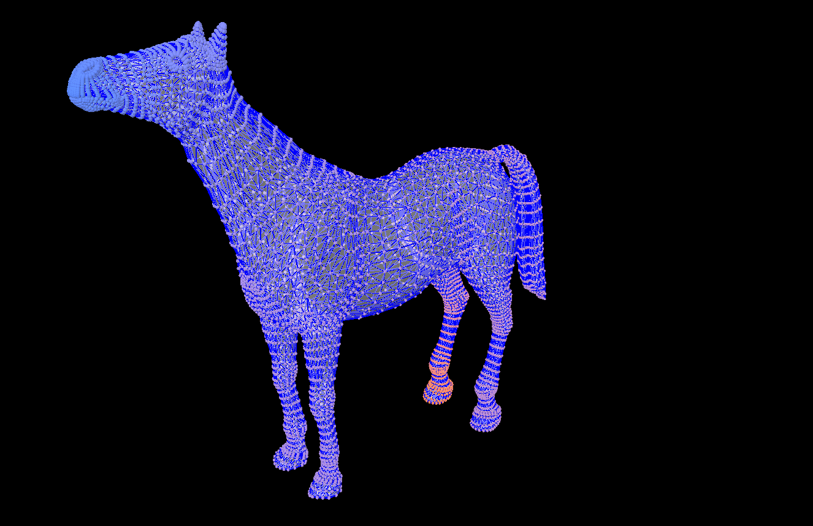
Figure 1: The pairwise harmonic field visualized by coloring vertices.
|
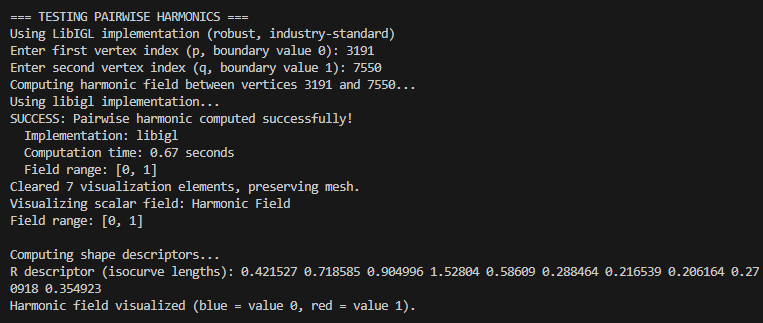
Figure 2: The program's output showing the extracted terminal isocurves.
|
2.4 Novel Shape Descriptors from Isocurves
The central innovation of the Zheng et al. paper is the extraction of two novel shape descriptors from these isocurves. By uniformly sampling K isocurves from the field (e.g., at levels 1/K,2/K,…,(K−1)/K), two descriptive vectors are formed:
- Perimeter Descriptor (Rpq): This is a K-dimensional vector where each element rpqi is the length of the i-th isocurve. This descriptor effectively measures the "width," "girth," or cross-sectional profile of the shape along the propagation path of the harmonic field from p to q.
- Distance Descriptor (Dpq): This is also a K-dimensional vector where each element dpqi is the average geodesic distance from points on the i-th isocurve to one of the source points (to p for the first half of isocurves, and to q for the second half). This descriptor captures information related to the "length" of the paths from the sources to the isocurves, providing a measure that is orthogonal to the perimeter descriptor.
This shift from a pointwise to a pairwise perspective is the key conceptual leap of the work. Traditional descriptors like curvature or shape diameter are defined at a single point, capturing purely local information. In contrast, the pairwise harmonic descriptors are fundamentally global. Although the Laplacian operator is local in its construction, the resulting harmonic field is a global phenomenon, influenced by the entire mesh topology and the positions of the two boundary points, p and q. The isocurves are therefore global structures that snake across the entire surface. Consequently, the descriptors Rpq and Dpq do not describe the properties at a point, but rather the geometric relationship between two points. This global, relational nature allows the framework to capture high-level structures like symmetry, correspondence, and part decomposition far more effectively than methods that rely solely on an accumulation of local features. For instance, if points p and q are symmetrically placed on a shape, the histograms of their perimeter and distance descriptors will themselves be nearly symmetric, providing a powerful and robust cue for symmetry detection.
Section 3: Algorithm in Focus: Simultaneous Skeletonization and Segmentation
The theoretical framework of pairwise harmonics provides the tools for a novel and elegant algorithm that performs mesh skeletonization and segmentation simultaneously. The algorithm leverages the dual nature of the harmonic isocurves to iteratively build a skeleton and refine a corresponding segmentation. This section provides a detailed, step-by-step deconstruction of this process, as described in the work by Zheng et al..8 Figures 3, 4, and 5 illustrate a key aspect of the algorithm: the progressive refinement of the skeleton as the number of initial surface sample points increases. As the number of samples grows from 4 (Figure 3), to 7 (Figure 4), and finally to 12 (Figure 5), the resulting skeletal structure becomes more detailed and accurate.
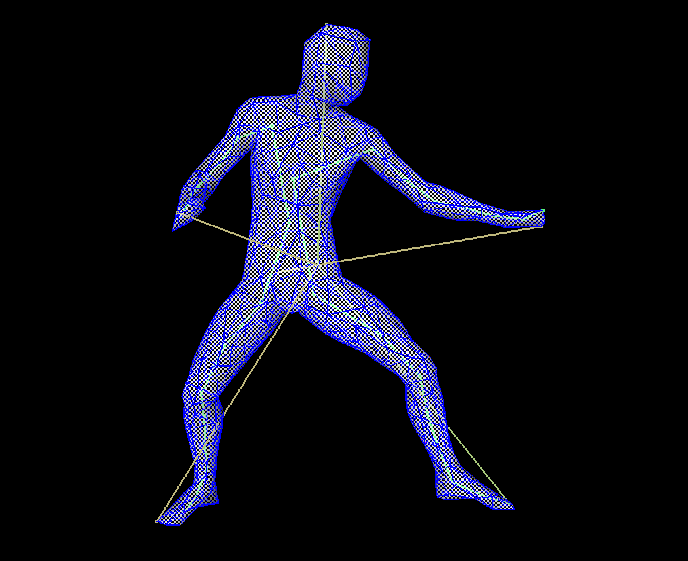
Figure 3: Skeleton from 4 sample points.
|
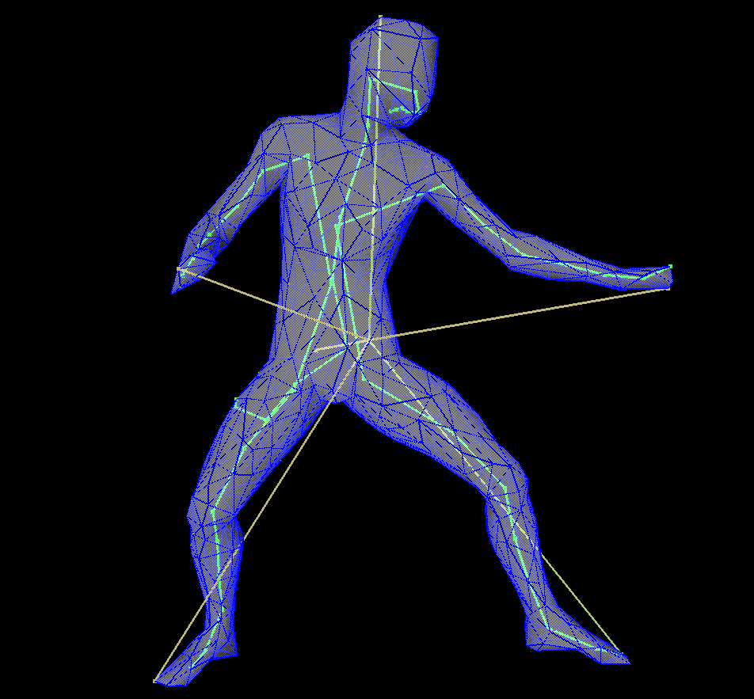
Figure 4: Skeleton from 7 sample points.
|
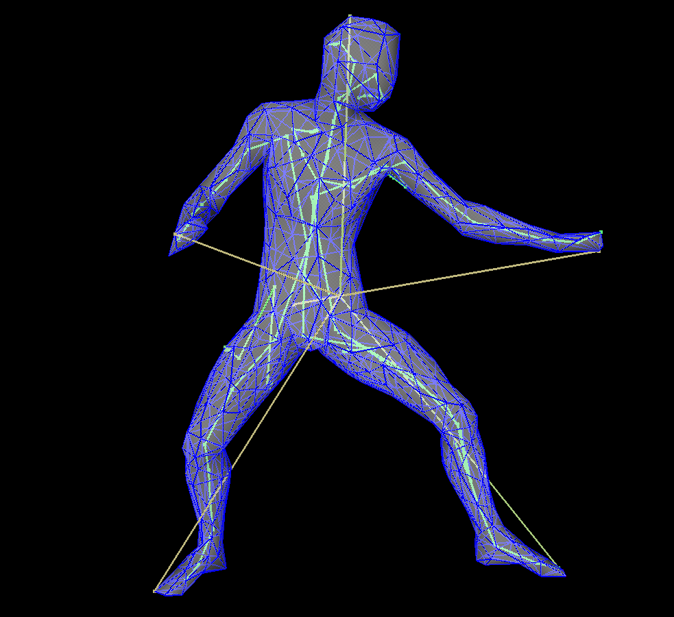
Figure 5: Skeleton from 12 sample points.
|
3.1 The Duality of Isocurves for Skeletonization and Segmentation
The core insight driving the algorithm is that the isocurves of a pairwise harmonic field can be interpreted in two complementary ways:
- For Skeletonization: The path formed by connecting the geometric centers (centroids) of the isocurves is naturally centered within the local volume of the shape. This path forms a segment of the object's curve skeleton, capturing its medial structure.
- For Segmentation: The isocurves themselves, which encircle the shape's cross-section, are natural candidates for segmentation boundaries. A cut along an isocurve cleanly separates the shape into two parts along a plane of constant harmonic potential.
The algorithm exploits this duality by using the skeleton to inform the segmentation and the segmentation to guide the completion of the skeleton in a symbiotic process.
3.2 Step-by-Step Algorithmic Breakdown
The algorithm proceeds through a sequence of well-defined steps, transforming a cloud of potential skeletal points into a structured skeleton and a meaningful part-based segmentation.
Step 1: Surface Sampling
The process is initiated by selecting a sparse yet representative set of points, denoted as Δ, on the mesh surface. While various sampling strategies could be employed, the paper advocates for a "max-min" sampling approach , which is functionally equivalent to the well-known
Farthest Point Sampling (FPS) algorithm.18
FPS works iteratively: an initial point is chosen randomly, and each subsequent point is selected as the one that is maximally distant (typically in the geodesic sense) from the set of points already selected. This process is repeated until a desired number of points is reached. The key advantage of FPS is that it ensures excellent coverage of the shape's surface, with points naturally migrating towards extremities and regions of high geometric distinction—features that are often semantically significant.8 The result of this sampling is shown in Figure 6.
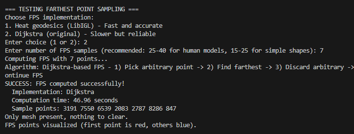
Figure 6: The terminal output showing vertices selected by Farthest Point Sampling, which uses geodesic distances often computed with Dijkstra's algorithm.
Step 2: Generating Potential Skeletal Segments
With the set of sample points Δ established, the algorithm proceeds to generate a dense collection of potential skeletal segments. For every pair of points (p,q) in the sampled set, the following procedure is executed:
- The pairwise harmonic field fp,q is computed by solving the discrete Laplace equation Lf=0 with boundary conditions f(p)=0 and f(q)=1.
- A set of K isocurves is extracted from this field at uniform intervals.
- The 3D centroid of each isocurve is calculated.
- These centroids are connected sequentially to form a single, continuous potential skeletal segment that traces a path from near p to near q.
Figures 7 and 8 show one such potential skeletal segment as a polyline generated by the explained logic. The terminal output in Figure 8 is particularly insightful, as drops in rigidity along this path may suggest the presence of junction or torso points, a concept that is central to the next step of the algorithm. This overall process results in a large, unstructured "soup" of skeletal segments, many of which are redundant or overlapping, covering the interior volume of the mesh.
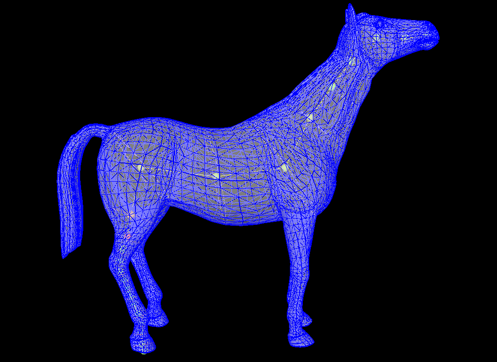
Figure 7: A potential skeletal segment shown as a polyline connecting isocurve centroids.
|
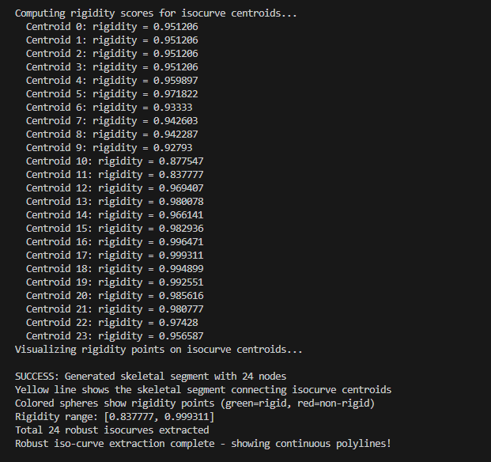
Figure 8: The terminal output of the polyline. Drops in rigidity along this path may suggest junction points.
|
Step 3: Rigidity Analysis for Junction Detection
The most critical and innovative step of the algorithm is to distill a meaningful structure from the unstructured cloud of skeletal nodes (the isocurve centroids). The goal is to identify which parts of the skeleton are simple, tube-like branches and which parts are complex junctions where multiple branches meet. This is achieved through a local geometric analysis called rigidity analysis.
For each skeletal node j, a local neighborhood is defined, consisting of all other skeletal nodes within a certain radius. The algorithm then performs Principal Component Analysis (PCA) on the 3D coordinates of the points in this neighborhood.9 PCA is a standard statistical technique that identifies the principal axes of variation in a cloud of points by computing the eigenvectors and eigenvalues of the data's covariance matrix.
The paper defines a node rigidity score, ξj, based on the eigenvalues (λ1,λ2,λ3) obtained from the PCA, where λ1≥λ2≥λ3:
$$ \xi_{j} = \frac{\max{\lambda_1, \lambda_2, \lambda_3}}{\lambda_1 + \lambda_2 + \lambda_3} = \frac{\lambda_1}{\lambda_1 + \lambda_2 + \lambda_3} $$
This simple ratio provides a powerful geometric insight. The eigenvalues of the covariance matrix represent the variance, or "spread," of the point cloud along the corresponding principal axes (eigenvectors). Figure 9 shows the global rigidity statistics for a given mesh, illustrating the distribution of these scores.
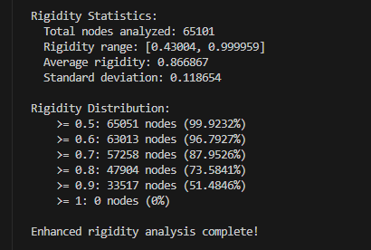
Figure 9: Global rigidity statistics for a given mesh.
This score has a clear geometric interpretation:
* A **high rigidity score (ξj≈1)** implies that one eigenvalue, λ1, is significantly larger than the other two (λ1≫λ2,λ3). This indicates that the local cloud of skeletal nodes is distributed primarily along a single line. Geometrically, this means the node j lies within a "rigid" or "tubular" part of the skeleton, such as the shaft of an arm or a leg.
* A **low rigidity score (ξj≈1/3)** implies that all three eigenvalues are of similar magnitude (λ1≈λ2≈λ3). This indicates that the local cloud of skeletal nodes is distributed isotropically, like a volumetric blob. Geometrically, this signifies that the node j is located at a **junction** where multiple skeletal branches converge from different directions, such as the torso where arms, legs, and head connect.
By thresholding this rigidity score, the algorithm can effectively and automatically classify all skeletal nodes as either belonging to a rigid branch or a junction region. This process is illustrated in Figures 10 through 13. Figure 10 shows the initial cloud of potential skeletal nodes, colored by their rigidity score (green is rigid, red is non-rigid). Figures 11, 12, and 13 demonstrate the effect of applying progressively lower rigidity thresholds to isolate the non-rigid junction points.
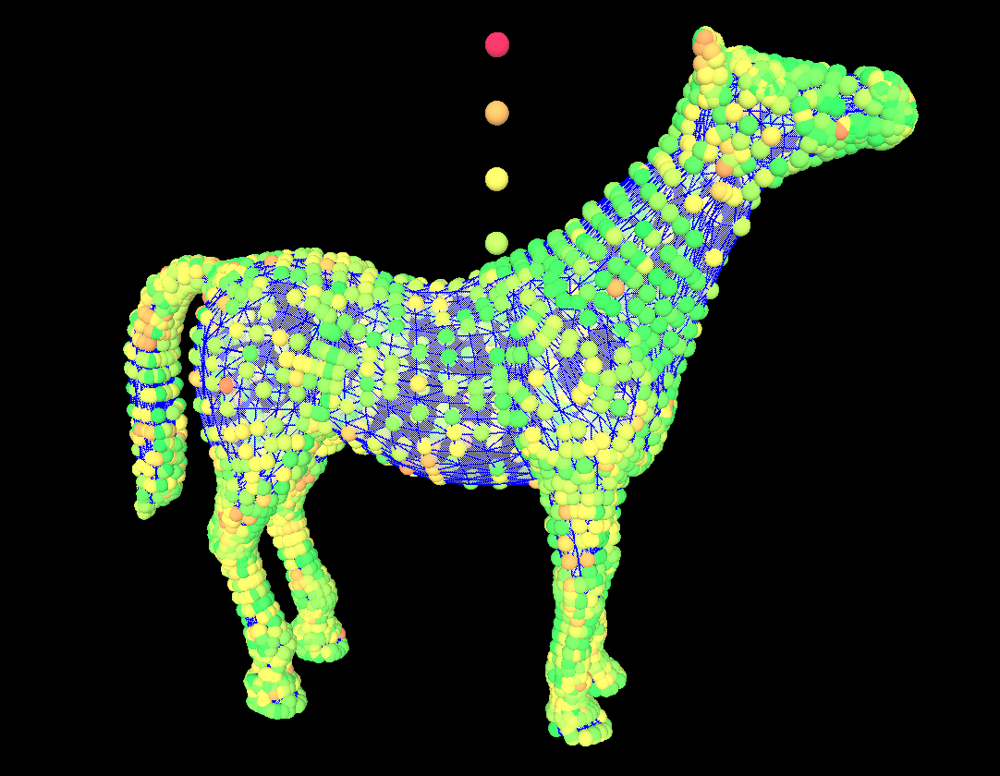
Figure 10: All potential nodes colored by rigidity.
|
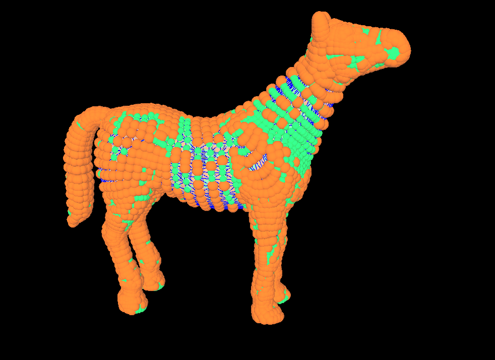
Figure 11: Non-rigid nodes (threshold < 0.9).
|
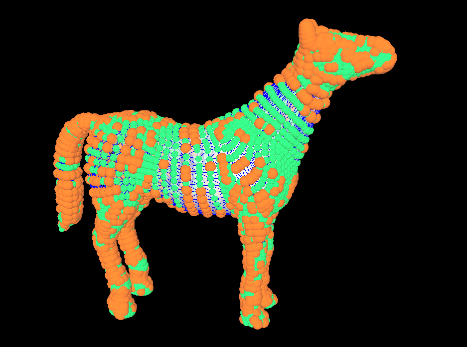
Figure 12: Non-rigid nodes (threshold < 0.8).
|
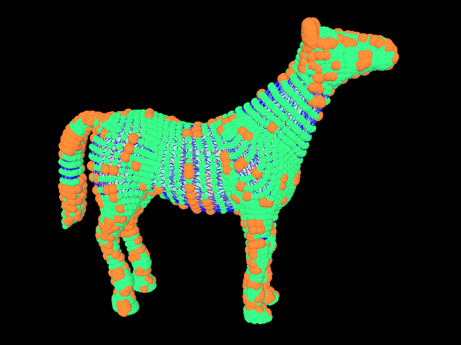
Figure 13: Non-rigid nodes (threshold < 0.7).
|
Step 4: Iterative Skeleton-Segmentation Refinement
The final stage of the algorithm uses the rigidity information to construct the final skeleton and segmentation in an iterative refinement process:
- Partial Skeleton Construction: All potential skeletal segments generated in Step 2 are first broken at any non-rigid node they pass through. A greedy algorithm then selects a set of the most prominent, non-overlapping segments (based on a score combining average rigidity and length) to form a partial skeleton. This skeleton consists of disconnected branches corresponding to the main rigid components of the shape.
- Initial Segmentation: An initial segmentation of the mesh is induced by the partial skeleton. The mesh is partitioned by making cuts along the isocurves that correspond to the two endpoints of each selected skeletal segment. This partitions the mesh into major components (one for each skeletal branch) and leftover "junction" components.
- Skeleton Completion: The skeleton is then completed. New skeletal nodes are created at the centroids of the junction segments. These new junction nodes are then connected to the endpoints of the nearby partial skeleton branches, guided by the adjacency information from the initial segmentation.
- Segmentation Refinement: Finally, the segmentation is refined using the completed skeleton as a guide. Components corresponding to skeletal endpoints (like hands or feet) are merged into their parent limb. Junction components are merged with adjacent body parts to create a clean, final segmentation where each contiguous segment corresponds to a single branch of the final skeleton.
This symbiotic process results in a coherent, simultaneous output of both a curve skeleton and a corresponding part-based segmentation that are structurally consistent with each other. Figures 14 through 17 show the resulting skeletons, while Figures 18 through 21 show the corresponding segmentations for various horse models. However, the algorithm is not perfect. Depending on the chosen parameters and the specific geometry of the model, imperfections can arise where, for example, the torso and limbs may incorrectly claim small segments from each other.
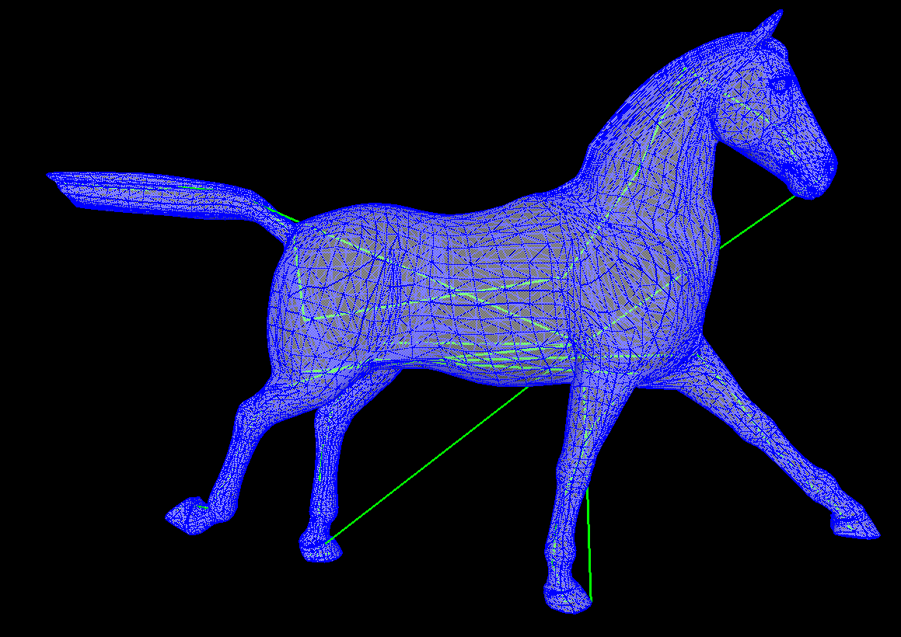
Figure 14: Resulting skeleton of horse model 1.
|
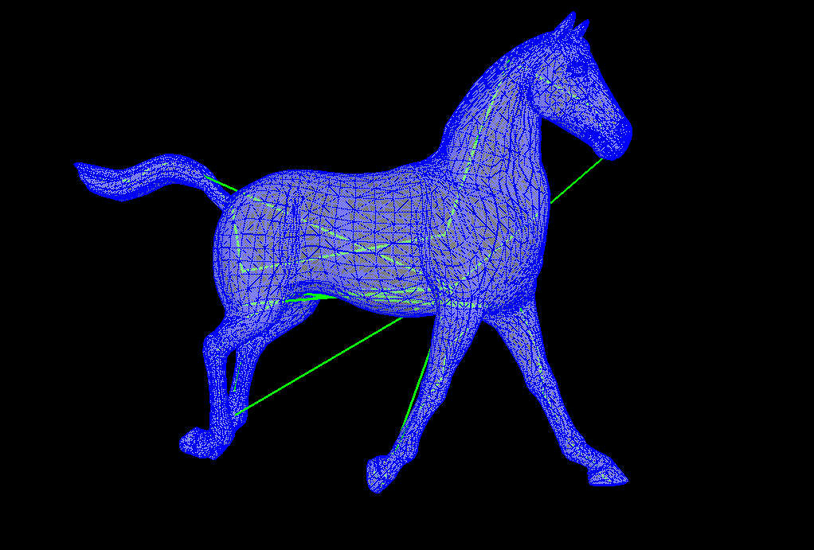
Figure 15: Resulting skeleton of horse model 2.
|
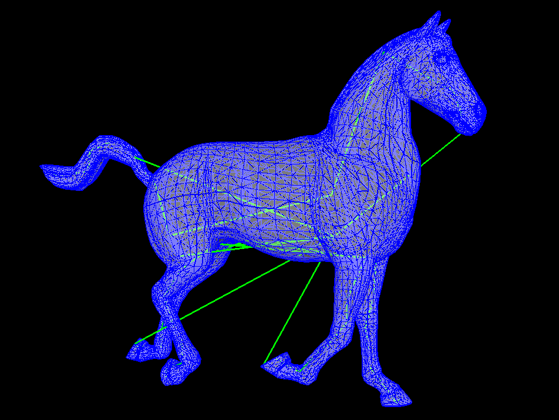
Figure 16: Resulting skeleton of horse model 3.
|

Figure 17: Resulting skeleton of horse model 4.
|
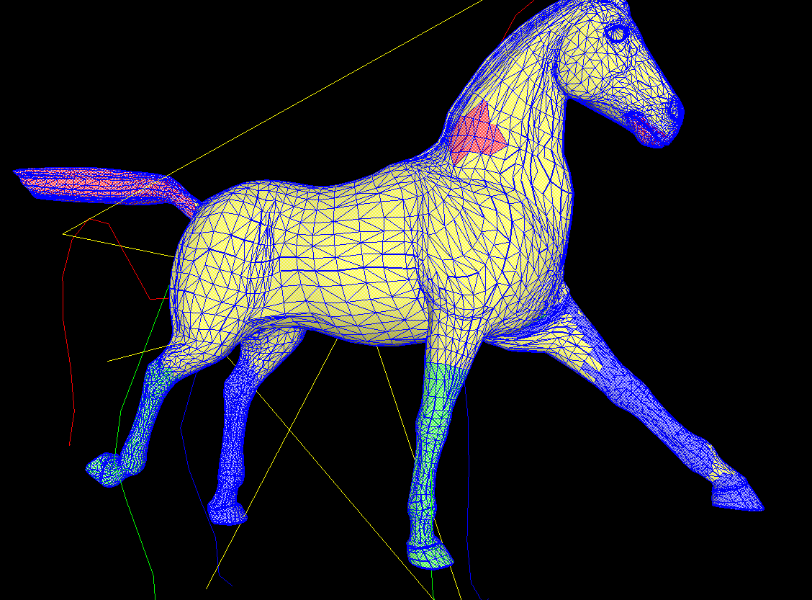
Figure 18: Resulting segmentation of horse model 1.
|

Figure 19: Resulting segmentation of horse model 2.
|
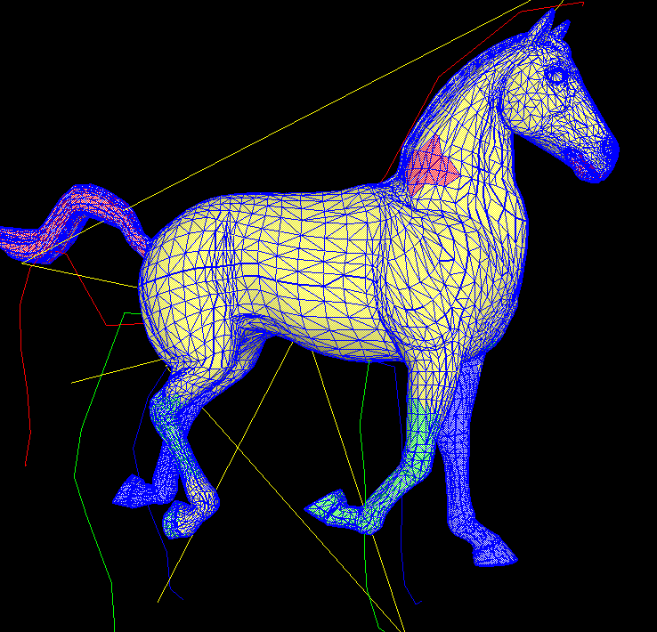
Figure 20: Resulting segmentation of horse model 3.
|
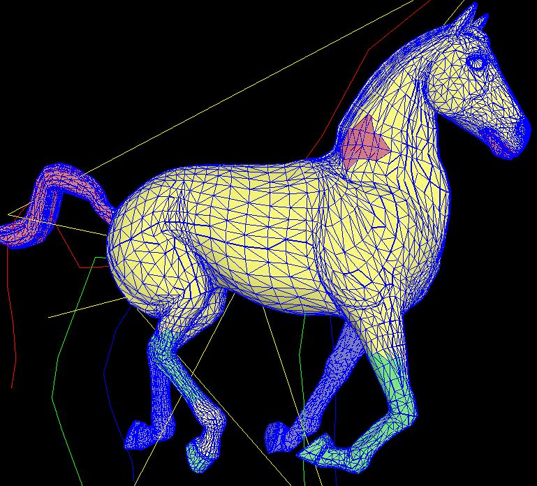
Figure 21: Resulting segmentation of horse model 4.
|
Section 4: A Guided Tour of the C++ Implementation
This section transitions from the abstract algorithm to its concrete realization in C++. By analyzing the project's build system and source code structure, we can gain a deeper understanding of the practical challenges and design choices involved in implementing advanced geometry processing research. The analysis is based on the file listing and configuration specified in the CMakeLists.txt file.
4.1 Project Architecture and Build Process (CMakeLists.txt)
The CMakeLists.txt file serves as the blueprint for the entire project, defining its components, dependencies, and compilation process. Several key aspects are revealed by its contents :
- Project Configuration: The project is named PairwiseHarmonicsSegmentation and is configured to use the C++17 standard (set(CMAKE_CXX_STANDARD 17)), indicating the use of modern C++ features.
- Dependency Management: The dependencies—Coin3D, Eigen, and libigl—are located using find_path with hardcoded absolute paths (e.g., C:/Users/cagopa/...). This is a common practice in academic research code, where rapid development on a specific machine is prioritized over portability and ease of distribution. In a production environment, this would typically be replaced by modern CMake's find_package command, which searches for dependency configuration files in standard locations, or by integrating a package manager like Conan 24 or vcpkg. This choice highlights a key difference between research prototypes and production-ready software.
- Platform-Specific Workarounds: The if(MSVC) block demonstrates the practical necessity of handling compiler-specific issues. The definitions -DNOMINMAX (to prevent conflicts between Windows headers and the C++ Standard Library), -DEIGEN_STRONG_INLINE=inline (an Eigen-specific performance hint), and the disabling of specific warnings (/wd...) are common workarounds for the Microsoft Visual C++ compiler. The /bigobj flag is particularly noteworthy, as it increases the number of addressable sections in an object file, a requirement often triggered by the extensive use of templates in libraries like Eigen and libigl.
- Resource Management: The add_custom_command directive is used as a post-build step to copy necessary resources—such as the Coin3D and SoWin DLLs and the various .off mesh model files—directly into the executable's output directory. This is a pragmatic solution that ensures the application can find its dependencies and data at runtime without requiring manual setup or modification of the system's PATH environment variable.
4.2 Core Source File Analysis
The set of source files listed in CMakeLists.txt reveals a logical, modular decomposition of the algorithm. Each file appears to handle a distinct part of the overall pipeline.
| File Name |
Primary Responsibility |
| main_segmentation.cpp |
Application entry point. Handles window creation, event loop, and initialization of the main application logic. |
| Mesh.cpp |
Encapsulates the 3D mesh data. Likely holds the vertex and face matrices (V & F) and provides helper methods for mesh queries. |
| Painter.cpp |
Manages the visualization using Coin3D. Constructs and updates the scene graph to render the mesh, skeleton, and segmentation. |
| PairwiseHarmonicsSegmentation.cpp |
The core orchestrator. Implements the main algorithmic loop described in Section 3, coordinating the other modules. |
| IsocurveAnalysis.cpp |
Implements the computation of pairwise harmonic fields and the extraction and analysis of their isocurves (length, centroids). |
| RigidityAnalysis.cpp |
Implements the PCA-based rigidity analysis on the cloud of skeletal nodes to distinguish rigid parts from junctions. |
| VisualizationUtils.cpp |
Contains helper functions for creating and manipulating Coin3D scene graph nodes for visualization purposes. |
| AnimatedMeshPipeline.cpp |
Implements the extension of the static algorithm to handle sequences of animated meshes, likely focusing on temporal consistency. |
| helpers.cpp |
A collection of general utility functions used across different modules of the project. |
main_segmentation.cpp: This file serves as the application's entry point. It is responsible for initializing the application window and the main event loop, likely using the SoWin library to embed a Coin3D rendering context within a native Windows window. It would also handle loading the initial mesh file specified by the user and instantiating the primary PairwiseHarmonicsSegmentation class to begin the analysis.
PairwiseHarmonicsSegmentation.cpp: This class is the heart of the application, containing the high-level logic for the entire simultaneous segmentation and skeletonization pipeline. It would manage the overall state of the algorithm, orchestrating calls to the other modules in the sequence described in Section 3: initiating surface sampling, calling IsocurveAnalysis to generate potential skeletal segments, passing the results to RigidityAnalysis to identify junctions, and performing the final iterative refinement of the skeleton and segmentation.
IsocurveAnalysis.cpp: This module is responsible for the core numerical computation of the pairwise harmonics. It would take a pair of vertex indices (p,q) as input. Internally, it would use libigl to construct the cotangent Laplacian matrix L for the mesh. It would then set up the sparse linear system Lf=b with the appropriate Dirichlet boundary conditions and use an Eigen sparse solver to find the harmonic field f. Finally, it would implement the logic to trace the level sets of this field to extract the isocurves and compute their essential properties: their length for the Perimeter Descriptor and their centroids for building the skeleton.
RigidityAnalysis.cpp: This file implements the crucial junction detection logic. It would take the cloud of all computed isocurve centroids as input. For each centroid, it would gather its local neighbors and use Eigen's linear algebra capabilities to construct and solve the PCA problem—calculating the covariance matrix of the neighborhood points and then finding its eigenvalues. From these eigenvalues, it would compute the rigidity score ξj as defined in the paper, providing the critical information needed to distinguish rigid branches from junctions.
4.3 The AnimatedMeshPipeline.cpp Extension
The presence of the AnimatedMeshPipeline.cpp file is a significant finding, as it indicates an extension of the original paper's static algorithm to handle dynamic, animated mesh sequences. This is a non-trivial task, as the primary challenge in processing animated sequences is maintaining
temporal consistency. A naive application of the static algorithm to each frame independently would likely result in a skeleton and segmentation that "flicker" or change topology erratically over time, which is visually jarring and unsuitable for applications like animation retargeting.
This module must therefore implement a strategy to enforce consistency. Several approaches are possible, and this file likely contains one of them:
- Reference Frame Propagation: The algorithm could be run once on a reference frame (e.g., the first frame or a T-pose), and the resulting skeleton and segmentation could be propagated to subsequent frames using techniques like non-rigid registration or surface tracking.
- Temporal Smoothing: The algorithm could be run on each frame, but the result from the previous frame could be used as a strong prior or a set of soft constraints for the current frame. For example, the rigidity scores or segment assignments could be temporally filtered to prevent abrupt changes.
- Consistent Feature Analysis: The algorithm might be modified to use features that are more stable over time, or to analyze the entire sequence at once to find a single, consistent skeleton that best explains the motion across all frames.
The analysis of this file reveals an ambition to tackle a more advanced research problem than the one described in the base paper, connecting the project to the active research area of consistent processing of animated shapes.1
Section 5: The Role of the External Library Ecosystem
The successful implementation of a complex geometry processing algorithm like Pairwise Harmonics is not accomplished in a vacuum. It relies heavily on a robust ecosystem of external libraries that provide high-level abstractions for mathematical and graphical operations. This project leverages a classic stack of C++ libraries—libigl, Eigen, and Coin3D—each playing a distinct and indispensable role.
5.1 libigl: The Geometry Processing Workhorse
libigl is a modern, open-source C++ library designed specifically for geometry processing research and development. Its core design philosophy is a departure from older, more monolithic libraries. It is a header-only library that exposes its wide-ranging functionality through simple, encapsulated functions that operate directly on matrix-based representations of meshes.12 This approach combines the rapid prototyping capabilities familiar to users of MATLAB or Python with the performance of C++.25
For this project, libigl serves as the primary interface for complex geometric computations, abstracting away low-level implementation details. Its key contributions include:
- Mesh Representation and I/O: libigl uses a simple and efficient representation for triangle meshes: an Eigen matrix V for vertex coordinates and an Eigen matrix F for face indices.12 The project uses libigl's I/O functions, such as
igl::readOFF, to load the .off model files specified in the CMakeLists.txt.
- Discrete Differential Operators: The most critical function provided by libigl for this project is igl::cotmatrix. This single function call constructs the sparse cotangent Laplacian matrix L from the mesh geometry (V, F), which is the cornerstone of the entire harmonic field computation.15
- Geodesic Distance: The calculation of the Distance Descriptor (Dpq) requires computing geodesic distances across the mesh surface. libigl provides the igl::heat_geodesics function, an efficient implementation of the "Heat Method" for approximating geodesic distances.17 This allows the project to compute the required distances without implementing a complex geodesic algorithm from scratch.
- Other Utilities: The project likely uses a variety of other libigl helper functions for tasks such as computing vertex normals (igl::per_vertex_normals), adjacency information (igl::adjacency_matrix), or other basic geometric queries.
5.2 Eigen: The Mathematical Engine
Underpinning libigl and the project's own numerical code is Eigen, a high-performance, versatile C++ template library for linear algebra.18 Eigen is the engine that powers all the mathematical heavy lifting.
Its crucial role in this project is the solution of the sparse linear system Lf=b that defines the pairwise harmonic field. This is a computationally intensive task, and Eigen's highly optimized sparse module is essential for achieving interactive performance. The project would use Eigen's SparseMatrix class to represent the cotangent Laplacian L and its direct or iterative solvers (e.g., Eigen::SparseLU, Eigen::SimplicialLLT, or Eigen::ConjugateGradient) to efficiently compute the field values f.
Furthermore, Eigen's use of expression templates is a key feature. This advanced C++ metaprogramming technique allows developers to write clean, high-level mathematical expressions (e.g., C = A * B + D) that the compiler transforms directly into highly optimized, single-pass loops, eliminating temporary objects and maximizing performance. This allows the numerical code in the project to be both readable and fast.18
5.3 Coin3D/SoWin: The Visualization Framework
For visualization, the project employs Coin3D, a free and open-source implementation of the Open Inventor API.8 Open Inventor pioneered the concept of a
retained-mode scene graph for 3D graphics.
In contrast to immediate-mode APIs like raw OpenGL, where the developer is responsible for issuing drawing commands every frame, a retained-mode system involves building a persistent data structure—the scene graph—that describes the entire scene. This graph is a hierarchical tree composed of nodes representing geometry (e.g., SoFaceSet for a mesh), properties (e.g., SoMaterial for color), transformations (e.g., SoTransform for position and rotation), and grouping (SoSeparator).19 To render the scene, one simply applies a render action (e.g.,
SoGLRenderAction) to the root of the graph, and the library handles the traversal and issues the necessary low-level graphics commands.19
The choice of Coin3D for a research project like this is a pragmatic one. While not as performant as a modern, custom-built game engine, a scene graph framework dramatically accelerates the development of interactive visualization tools. It automatically handles complex tasks like camera manipulation (orbiting, panning, zooming), object picking (selecting vertices or faces with the mouse), and efficient state management. The Painter.cpp and VisualizationUtils.cpp files in the project would be dedicated to constructing and manipulating this scene graph—creating nodes for the input mesh, the computed skeleton (SoLineSet), segmentation boundaries (SoLineSet), and user interaction helpers.
The SoWin library is a specific binding that integrates the Coin3D rendering canvas into a native Microsoft Windows (Win32) application, handling the creation of the window and the message loop.19 This completes the visualization stack, enabling the researchers to interactively view and debug the output of their algorithm.
Section 6: A Comparative Analysis and Broader Context
To fully appreciate the contributions and trade-offs of the Pairwise Harmonics project, it is essential to place it within the broader landscape of mesh segmentation research. This section provides a critical comparison with alternative paradigms and algorithmic choices, highlighting the unique position of the implemented method.
6.1 Model-Driven (Pairwise Harmonics) vs. Data-Driven (CRF) Segmentation
The most salient distinction in modern segmentation is the one between model-driven and data-driven approaches. The project's method, based on Zheng et al. 8, is a quintessential model-driven approach, while the work of Kalogerakis et al. is a state-of-the-art example of a data-driven, learning-based framework. A direct comparison reveals their complementary strengths and weaknesses.
| Feature |
Pairwise Harmonics (Model-Driven) |
Conditional Random Fields (Data-Driven) |
| Methodology |
Intrinsic geometric analysis based on harmonic fields and rigidity. |
Statistical learning on a large feature set using a probabilistic graphical model. |
| Data Dependency |
Requires only a single input mesh. It is "unsupervised." |
Requires a large, consistently labeled training set for each object class. |
| Feature Engineering |
Features (perimeter/distance descriptors) are implicitly derived from the global harmonic field. |
Relies on extensive, explicit feature engineering: hundreds of hand-crafted geometric and contextual features are computed per face. |
| Core Operator |
The discrete cotangent Laplacian (Lf=b). |
A JointBoost classifier to learn unary potentials and a CRF energy function to combine them with pairwise potentials. |
| Output |
Provides an unlabeled segmentation and a corresponding curve skeleton. |
Provides a labeled segmentation (e.g., "arm," "leg," "torso"). |
| Generalizability |
Generalizes to any mesh topology or class without modification. |
Generalizes well to new instances within a trained class, but requires complete retraining for new object categories. |
| Semantic Awareness |
Purely geometric; cannot distinguish parts that are not geometrically salient. |
Highly semantic; directly learns the definition of parts like "handle" or "wing" from examples. |
The Pairwise Harmonics approach offers remarkable generality. It can be applied to any watertight mesh and will produce a structural decomposition based on its intrinsic geometry. Its robustness to noise and pose changes, inherited from the properties of the cotangent Laplacian, is a significant advantage. However, its output is purely structural. It can identify a "limb-like" protrusion, but it cannot label it as an "arm."
Conversely, the CRF-based method excels at exactly this semantic labeling task. By learning from human-provided examples, it can segment and identify parts with high accuracy, even when the geometric cues are subtle. Its weakness is its reliance on data and its class-specific nature. The two paradigms are thus not competitors but rather complementary solutions to different facets of the shape understanding problem.
6.2 The Role of Energy Minimization and Graph Cuts
The concept of energy minimization is a unifying theme in many computer vision and graphics problems, including segmentation. The goal is to define an energy function where lower values correspond to "better" solutions (e.g., a more desirable segmentation) and then find the configuration that minimizes this energy.20
Graph cuts have emerged as a powerful and efficient technique for minimizing certain classes of energy functions, particularly those involving discrete label assignments.20
In the CRF method by Kalogerakis et al., graph cuts are the central inference engine. The CRF objective function, E(c;θ), is a classic energy function with a data term (unary potential) measuring how well a label fits a face, and a smoothness term (pairwise potential) penalizing disagreements between neighboring faces. This energy function can be mapped directly onto a graph, where the data terms correspond to the weights of edges connecting nodes to special "source" and "sink" terminals, and the smoothness terms correspond to the weights of edges between neighboring face nodes. Finding the minimum cut on this graph is equivalent to finding the labeling that globally minimizes the energy function. The paper uses the alpha-expansion algorithm, a powerful graph cut technique for multi-label problems.
The Pairwise Harmonics method does not use a global graph cut optimization for its primary segmentation. Instead, its partitioning emerges from a more procedural, greedy approach: identifying rigid skeletal segments and then using their endpoint isocurves as boundaries.
However, a powerful synthesis of these ideas exists in the literature. It is possible to use the smooth, geometrically-aware signal from a harmonic field to define the data term within a graph cut energy minimization framework.49 For instance, given a harmonic field computed from user-provided seeds, the harmonic value at a face could be used to define its probability of belonging to the foreground or background segment. This probability then directly informs the data term (the terminal edge weights) in a graph cut formulation. This hybrid approach combines the global smoothness of harmonic fields with the globally optimal partitioning of graph cuts, often leading to very robust interactive segmentation results. While not implemented in this specific project, it represents a compelling fusion of the underlying concepts from both reference papers.
6.3 Geodesic Distance Computation: The Heat Method vs. Dijkstra's Algorithm
The Distance Descriptor, Dpq, is a key component of the Pairwise Harmonics framework, and its computation relies on measuring geodesic distances on the mesh surface. The choice of algorithm for this sub-task has significant implications for both accuracy and performance. The two primary contenders for this task are the classic Dijkstra's algorithm and the more modern Heat Method.
| Algorithm |
Dijkstra's Algorithm |
The Heat Method |
| Methodology |
Graph search algorithm (finds shortest path on the mesh's edge graph). |
PDE-based method (approximates geodesic distance by solving heat and Poisson equations). |
| Accuracy |
Exact for the graph path, but an approximation of the true surface geodesic. Can be inaccurate on coarse or poorly triangulated meshes. |
An approximation of the true surface geodesic. Generally more accurate and robust, especially on low-quality meshes. |
| Performance |
Fast for a single source query. Complexity is typically O(E+VlogV). |
Higher initial precomputation cost. However, after pre-factoring the linear systems, subsequent queries for new sources are extremely fast (near-linear time). |
| Implementation |
Conceptually simple, but robust implementation can be tricky. |
More complex mathematically, but implementation is simplified by using standard sparse linear algebra libraries. |
Dijkstra's algorithm works by treating the mesh as a graph and finding the shortest path from a source vertex to all other vertices along the mesh edges.26 While simple and fast for a single query, its major drawback is that it is constrained to the mesh's connectivity and cannot find paths that "cut across" faces. This leads to systematic overestimation of the true surface distance, an error that only vanishes slowly as the mesh is refined.27
The Heat Method, developed by Crane et al., is a more sophisticated approach based on a deep connection between heat diffusion and geodesic distance.17 It works in three steps: (1) simulate the diffusion of heat from a source for a short amount of time by solving a heat equation, (2) compute the normalized gradient of the resulting heat distribution, which points in the direction of the geodesics, and (3) solve a Poisson equation to recover the distance function from this gradient field.
The crucial advantage of the Heat Method in the context of the Pairwise Harmonics project is its amortized performance. The algorithm requires solving two sparse linear systems. The matrices for these systems depend only on the mesh geometry, not the source points. Therefore, they can be pre-factored once (e.g., using an LU or Cholesky decomposition). After this one-time, expensive precomputation, solving for any new set of source points becomes extremely fast, involving only back-substitution.26 Since the Pairwise Harmonics algorithm needs to compute distance descriptors for many different pairs of points
(p,q), this amortized efficiency is a perfect match for the application's performance profile. The likely use of igl::heat_geodesics 17 in the implementation is therefore not just a matter of convenience, but a well-reasoned engineering choice that prioritizes the performance of the overall system.
Section 7: Conclusion, Critique, and Future Directions
This investigative report has conducted a comprehensive analysis of the "Pairwise Harmonics Segmentation" C++ project, tracing its foundations from the theoretical principles of discrete differential geometry to its practical implementation using a modern C++ library ecosystem. The project stands as a successful realization of the novel, model-driven approach to simultaneous mesh segmentation and skeletonization proposed by Zheng et al..8 By shifting the focus of shape analysis from single-point descriptors to global, pairwise descriptors derived from harmonic fields, the method achieves a robust and elegant structural decomposition of 3D shapes.
7.1 Summary of Findings
The core of the project is the Pairwise Harmonics algorithm, which leverages the dual nature of harmonic isocurves as both skeletal profiles and segmentation boundaries. The key algorithmic innovation is the use of Principal Component Analysis on the local distribution of potential skeletal nodes to derive a "rigidity score." This score effectively and efficiently distinguishes between rigid, tubular parts of a shape and complex junctions, providing the necessary structural cues to guide the construction of a coherent skeleton and a corresponding segmentation.
The C++ implementation is well-structured and makes effective use of a powerful library ecosystem. Eigen provides the high-performance linear algebra engine necessary for solving the sparse systems that define the harmonic fields. libigl serves as a high-level geometry processing library, abstracting complex operations like the construction of the cotangent Laplacian and the computation of geodesic distances. Coin3D offers a capable, scene-graph-based framework for interactive visualization and debugging. The discovery of an AnimatedMeshPipeline.cpp file further indicates that the project extends beyond the static case described in the foundational paper, tackling the more advanced problem of consistent segmentation over time. The sensitivity of the algorithm to its parameters is demonstrated in Figures 23 through 28. These figures illustrate how the final segmentation changes from the default result (Figure 22) when key parameters are adjusted.
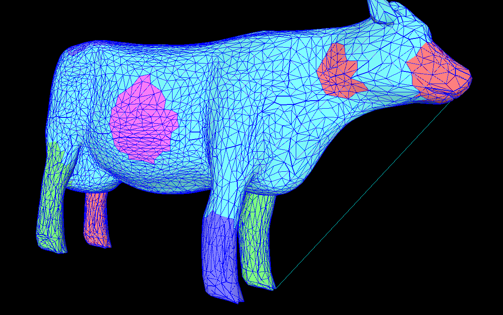
Figure 22: The default segmentation result.
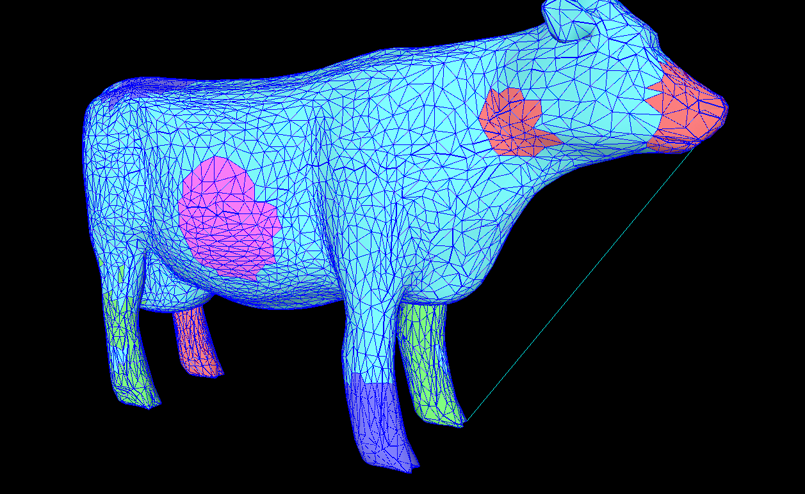
Figure 23: A high alpha causes the torso to incorrectly claim limb segments.
|
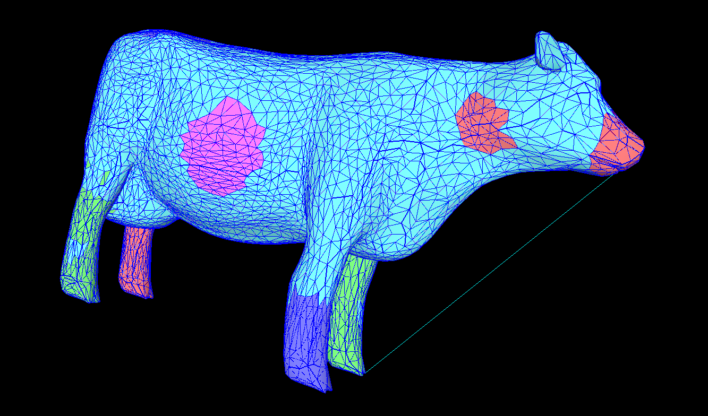
Figure 24: A high distance threshold produces a similar result to a high alpha.
|
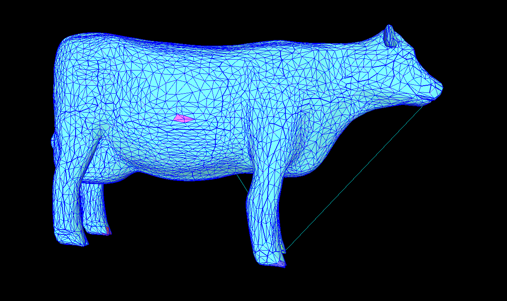
Figure 25: A high harmonic value is the most destructive, causing segments to disappear.
|
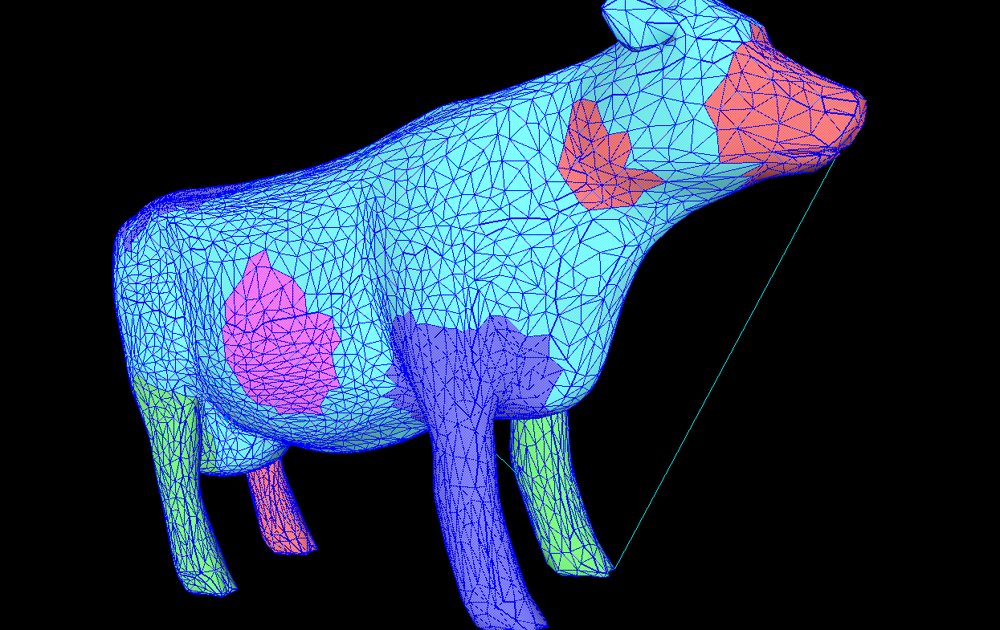
Figure 26: A low alpha causes limb segments to claim parts of the torso.
|
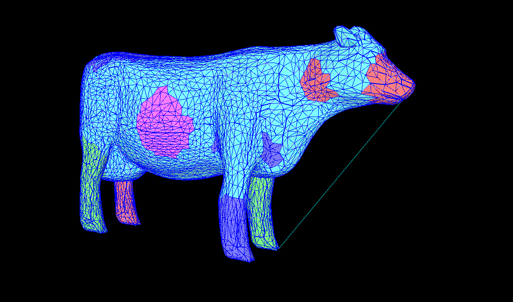
Figure 27: A low distance threshold generates noisy, fragmented segments.
|
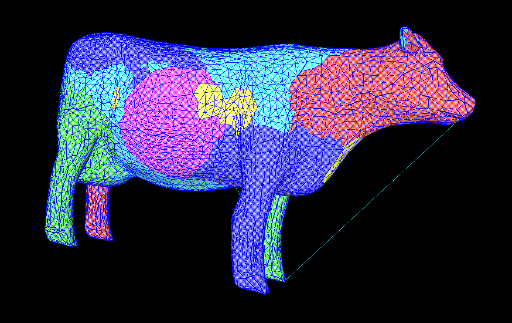
Figure 28: A low harmonic value leads to the creation of spurious new segments.
|
7.2 Critical Assessment
The implemented approach possesses a number of significant strengths, but also several inherent limitations that define its scope of applicability.
Strengths:
- No Training Data Required: As a purely model-driven, unsupervised method, it can be applied to any input mesh without the need for large, pre-labeled datasets. This makes it highly versatile and applicable in scenarios where training data is scarce or unavailable.
- Robustness: The foundation on harmonic fields computed with the cotangent Laplacian makes the algorithm inherently robust to mesh tessellation, surface noise, and, most importantly, isometric deformations like pose changes. A shape's structural decomposition remains consistent even as it bends and articulates.
- Algorithmic Elegance: The use of PCA for rigidity analysis is a simple yet remarkably effective technique for identifying high-level structural features (junctions) from low-level geometric data.
Weaknesses and Limitations:
- Topological Sensitivity: The method's reliance on a dominant principal axis for identifying rigid parts makes it less effective for shapes or components that are inherently flat or blob-like, such as the torso of the teddy bear model noted in the original paper. It is biased towards shapes with clear, branching, tubular structures.
- Parameter Sensitivity: The quality of the final result can be sensitive to the choice of several parameters, including the number of initial sample points, the number of isocurves (K) extracted per field, and the threshold used to classify nodes as rigid or non-rigid.
- Lack of Semantic Awareness: Being a purely geometric method, the algorithm cannot make semantic distinctions. It cannot differentiate a shirt from a torso if they are smoothly connected, nor can it label the resulting segments with meaningful names. This is the domain where data-driven approaches like the CRF method hold a distinct advantage.
7.3 Recommendations for Future Work
The project provides a strong foundation for several exciting avenues of future research and development, aiming to address its limitations and expand its capabilities.
- Hybrid Model-Driven and Data-Driven Approaches: The most promising direction is to fuse the strengths of the two major paradigms. The pairwise harmonic descriptors (Rpq and Dpq) are powerful, global, and pose-invariant. These descriptors could be used as highly informative features within a learning-based framework like the CRF model from Kalogerakis et al.. This could potentially lead to a model that achieves high semantic accuracy while requiring less hand-crafted feature engineering and benefiting from the global structural awareness of the harmonic fields.
- Enhanced Rigidity and Junction Analysis: The PCA-based rigidity score could be augmented or replaced with more sophisticated local shape analysis techniques. Methods that analyze the spectral properties of the local shape operator or use machine learning to classify junction types could lead to more robust handling of complex, non-tubular connections.
- Formalizing the Animated Pipeline: The existing AnimatedMeshPipeline.cpp could be developed into a more formal framework for consistent animated segmentation. This would involve implementing and evaluating different strategies for ensuring temporal coherence, such as using the segmentation from frame t−1 as a soft constraint or initialization for the segmentation of frame t, and comparing the results against state-of-the-art methods in this domain.5
- Software Engineering and Distribution: To move the project from a research prototype to a more widely usable tool, the build system should be refactored. Replacing the hardcoded paths in CMakeLists.txt with modern CMake find_package calls and providing package configuration files would dramatically improve its portability and ease of integration into other projects. This would lower the barrier to entry for other researchers wishing to build upon this work.
Works cited
- Robust Mesh Segmentation Using Feature-Aware Region Fusion - OUCI, accessed on June 27, 2025, https://ouci.dntb.gov.ua/en/works/4rZoBNe4/
- Fast Mesh Segmentation using Random Walks, accessed on June 27, 2025, https://cg.cs.tsinghua.edu.cn/people/~laiyk/papers/spm08seg.pdf
- 3D Semantic Segmentation | Papers With Code, accessed on June 27, 2025, https://paperswithcode.com/task/3d-semantic-segmentation
- Unified part-patch segmentation of mesh shapes using surface skeletons - webspace.science.uu.nl, accessed on June 27, 2025, https://webspace.science.uu.nl/~telea001/uploads/PAPERS/SkelBook17/ch4.pdf
- Spatio-temporal Segmentation based Adaptive Compression of Dynamic Mesh Sequences - University of Houston, accessed on June 27, 2025, http://graphics.cs.uh.edu/wp-content/papers/2020/2020-TOMM-MeshSequenceCompression.pdf
- Deep Dive into Conditional Random Fields - Number Analytics, accessed on June 27, 2025, https://www.numberanalytics.com/blog/deep-dive-into-conditional-random-fields
- 3D mesh model segmentation based on skeleton extraction | Request PDF - ResearchGate, accessed on June 27, 2025, https://www.researchgate.net/publication/366519453_3D_mesh_model_segmentation_based_on_skeleton_extraction
- Pairwise Harmonics for Shape Analysis - College of Engineering | Oregon State University, accessed on June 27, 2025, https://web.engr.oregonstate.edu/~zhange/images/pairwise_harmonics.pdf
- Cotangent Laplace Operator Essentials - Number Analytics, accessed on June 27, 2025, https://www.numberanalytics.com/blog/cotangent-laplace-operator-essentials
- Cotan Laplace: A Deep Dive into Computational Geometry - Number Analytics, accessed on June 27, 2025, https://www.numberanalytics.com/blog/cotan-laplace-deep-dive-computational-geometry
- C++ code for cotangent weights over a triangular mesh - Rodolphe Vaillant's homepage, accessed on June 27, 2025, http://mobile.rodolphe-vaillant.fr/?e=69
- libigl, accessed on June 27, 2025, https://libigl.github.io/
- PointCloud — Open3D 0.17.0 documentation, accessed on June 27, 2025, https://www.open3d.org/docs/0.17.0/tutorial/t_geometry/pointcloud.html
- Principal Component Analysis (PCA) - Towards Data Science, accessed on June 27, 2025, https://towardsdatascience.com/principal-component-analysis-pca-8133b02f11bd/
- Fusion of motion smoothing algorithm and motion segmentation algorithm for human animation generation | PLOS One, accessed on June 27, 2025, https://journals.plos.org/plosone/article?id=10.1371/journal.pone.0318979
- Kinematic Skeleton Extraction from 3D Model Based on Hierarchical Segmentation - MDPI, accessed on June 27, 2025, https://www.mdpi.com/2073-8994/17/6/879
- Keenan Crane - The Heat Method for Distance Computation, accessed on June 27, 2025, https://www.cs.cmu.edu/~kmcrane/Projects/HeatMethod/
- libeigen / eigen - GitLab, accessed on June 27, 2025, https://gitlab.com/libeigen/eigen
- Coin: SoGLRenderAction Class Reference - Coin3D, accessed on June 27, 2025, https://www.coin3d.org/coin/classSoGLRenderAction.html
- What energy functions can be minimized via graph ... - CS@Cornell, accessed on June 27, 2025, https://www.cs.cornell.edu/~rdz/Papers/KZ-PAMI04.pdf
- An Introduction to Graph-Cut, accessed on June 27, 2025, https://www.cs.ucf.edu/courses/cap6411/cap6411/spring2006/Lecture11.pdf
- Fast Approximate Energy Minimization via Graph Cuts - CS@Cornell, accessed on June 27, 2025, https://www.cs.cornell.edu/rdz/Papers/BVZ-iccv99.pdf
- Interactive mesh segmentation based on feature preserving harmonic field - ResearchGate, accessed on June 27, 2025, https://www.researchgate.net/publication/285977998_Interactive_mesh_segmentation_based_on_feature_preserving_harmonic_field
- Dot Scissor: A Single-Click Interface for Mesh Segmentation, accessed on June 27, 2025, http://www.cad.zju.edu.cn/home/zyy/docs/dotScissor_final.pdf
- 3DFaces/libigl_Martin: Extension of libigl which allows to also read the texture of wrl-files in Python as igl.read_triangle_mesh(wrFilePath, V, F, TC) @ ba7c876314481eb6f3e7e3d3f50ac47af956d2e3 - Computer Vision Group Jena, accessed on June 27, 2025, https://git.inf-cv.uni-jena.de/3DFaces/libigl_Martin/src/ba7c876314481eb6f3e7e3d3f50ac47af956d2e3/tutorial/tutorial.md
- The Ultimate Guide to Geodesic Distance Algorithms, accessed on June 27, 2025, https://www.numberanalytics.com/blog/ultimate-guide-geodesic-distance-algorithms
- shortest paths & geodesics - algorithm - Stack Overflow, accessed on June 27, 2025, https://stackoverflow.com/questions/6940051/shortest-paths-geodesics